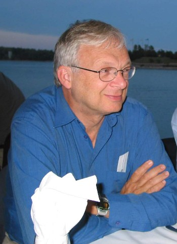
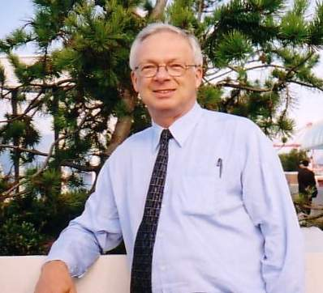
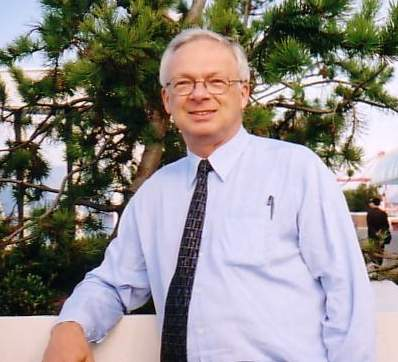
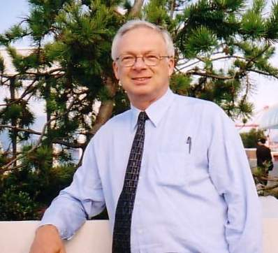

I was born in Edmonton, Alberta, Canada, at a very early age :-) and grew up in different places in
Alberta and Saskatchewan due to my father's frequent relocations related to his
work as a clergyman.
After graduating from The University of Alberta in
Edmonton in 1970 with a B.Sc. degree, I served as a "volunteer" mathematics
teacher at a prestigious girls secondary school in Cameroon, West Africa, for two years at Limbe. Living in West Africa was the most incredible experience. Following this assignment, I spent nine years in Micronesia on the incredibly beautiful
tropical Pacific islands of Yap (1 year), Palau (4 years), and my wife's home, the Marshall Islands (4 years), where I
taught in various high schools.
During this period, I married Penny in 1975,
and we were blessed with three sons: Chris (1977), Wes (1978) and Lionel
(1980). In 1981 we moved to Honolulu Hawaii where I completed an M.B.A. degree
in International Finance at the University of Hawaii Graduate Business School,
after which I worked in Hawaii for an international consulting firm for two
years. Our fourth son, Neil, was born in Hawaii in 1984.
We returned to Canada
in 1985 to live near my parents, who, incidentally, have both passed away by now. I soon began work in the Vancouver office of a national investment firm, SEI, in the investment industry. In 1996 I was invited to join Montrusco Bolton
Investments, a national investment management firm, when they opened their
Vancouver office as a Vice President. This partnership ended in September 2003 when the company closed
its Vancouver office. After this I joined a very specialized consulting group, Risk and Investment analytics, within RBC, Canada's largest bank. We provided investment performance and portfolio analytics consulting to large pension plan and endowment/foundation clients throughout western Canada from the Vancouver office.
My "regular" work life ended in January 2013 when I retired. I was fond of saying "I love my work but I'm tired of working." My main structured activity now is serving as the chair of the British Columbia Schizophrenia Society Foundation charity and sitting on the investment committee of a major university endowment fund. I also try to go on several major trips each year and I generally just do as I feel the spirit moves me. This has included visiting India a number of times, Vietnam, Cambodia, Panama, Singapore, Hong Kong, Mexico, Cuba, Philippines, and a number of cruises. It's been great!
My health is good but Penny suffered from severe diabetes and kidney failure that necessitated being on dialysis since 2013. In 2016 she suffered a stroke that has made life a bit more challenging for us. In August 2017 Penny was hospitalized with problems related to her diabetes including the need for amputations. She did not survive this onslaught and passed away on November 11, 2017. (More details are recorded on the "Penny's Page" part of this website.
Three of my sons - Chris, Wes, and Lionel - live nearby. In 2015 Neil married Kamy with whom he grew up with in Canada. They reside in Hong Kong, her ethnic home, and have a son, Elliot, and daughter, Valerie. Chris married Nena in January, 2018.


 


GERHART PAHL